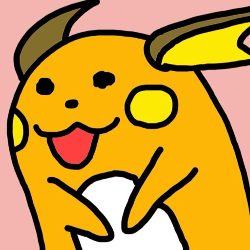
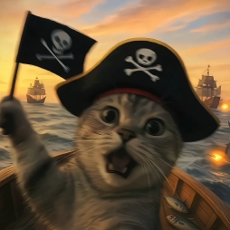

B站直播日报汇总
2026-07-15 · 官方 1/9 开播 · KOL 9/14 开播
10/23
开播间
72h40m
累计时长
264,885
有效弹幕（原始 318,750，剔除 53,865）
游戏直播热度看板
快照时间：2026-07-16 09:29:53 ｜ 在播数=快照瞬时 ｜ 全天开播量=24h去重累计 ｜ 数据来源：B站直播分区API
今日争议 TOP3（按游戏 / 按直播间）
口径：仅统计产品相关争议信号（认可/风险/建议/疑问/竞品/运营/梗反串），不含非产品互动与噪声刷屏。
按游戏聚合
TOP1
鸣潮 · 竞品定位
围绕【竞品定位】以信息交流为主，主要集中在竞品定位讨论（221条）。
3820
TOP2
明日方舟 · 玩法体验
围绕【玩法体验】讨论偏负向，主要集中在信息疑问、产品建议（714条）。
1077
TOP3
原神 · 剧情演出
围绕【剧情演出】出现明显分歧，主要集中在信息疑问、产品建议（205条，正2/负2）。
623
按直播间聚合
TOP1
黑衣侦探 · 竞品定位
围绕【竞品定位】讨论偏负向，主要集中在竞品定位讨论（3207条）。
3207
TOP2
明日方舟 · 玩法体验
围绕【玩法体验】讨论偏负向，主要集中在信息疑问、产品建议（714条）。
714
TOP3
魔法Zc目录 · 综合讨论·绷
围绕【综合讨论·绷】讨论偏负向，主要集中在梗反串待复核（695条）。
695
官方直播间
开播 1/9 ｜ 弹幕 70,417 条 ｜ 时长 2h25m
明日方舟（5555734）👥 7,382,881 关注
📡 开播 🛡️ 风险 低（7.3%）🎮 主内容：战斗
🏷️ Top话题：战斗(153) / 乐队(61) / 鸣潮(20)
💬 弹幕信号：
产品认可 1273%产品风险 90%运营福利风险 1554%产品建议 231%信息疑问 127930%竞品定位讨论 66115%梗反串待复核 207348%
非产品互动 60079
情感：正面为主 0%偏正面 1%中性 98%偏负面 1%负面为主 0%
📊 产品舆情方向
有效 2254
🟢低 7.3%
产品认可 127 产品风险 9 运营福利风险 155 产品建议 23 信息疑问 1279 竞品定位讨论 661
梗反串待复核 2073非产品互动 60079
代表性评论
- [产品认可] “大伙退一退就不卡了”
- [产品风险] “非常寒哥的操作”
- [运营福利风险] “登录完点了一下那个公告牌就到这儿了”
争议焦点：TOP1 玩法体验 714TOP2 综合讨论·急 901TOP3 竞品定位 646
围绕【玩法体验】讨论偏负向，主要集中在信息疑问、产品建议（714条）。
原神（21987615）
👥 20,628,682 关注未开播
崩坏：星穹铁道（27263119）
👥 12,380,172 关注未开播
绝区零（32805602）
👥 7,880,498 关注未开播
鸣潮（27354807）
👥 5,268,625 关注未开播
异环（1890951177）
👥 3,008,444 关注未开播
望月（1892451545）
👥 694,730 关注未开播
归环（1992270167）
👥 304,813 关注未开播
伊莫（1746235011）
👥 273,717 关注未开播
KOL 直播间
开播 9/14 ｜ 弹幕 194,468 条 ｜ 时长 70h14m
你的影月月（21414905）👥 10,073,721 关注
📡 开播 🛡️ 风险 低（3.9%）🏷️ KOL标签：商单频率：中 ｜ 方向：原神 / 星铁 / 绝区零 / 攻略评测
🎮 主内容：剧情
🏷️ Top话题：剧情(127) / 主线(115) / 原神(104)
💬 弹幕信号：
产品认可 293%产品风险 262%运营福利风险 81%产品建议 50%信息疑问 62458%竞品定位讨论 17116%梗反串待复核 21520%
非产品互动 8868
情感：正面为主 0%偏正面 1%中性 96%偏负面 2%负面为主 1%
📊 产品舆情方向
有效 863
🟢低 3.9%
产品认可 29 产品风险 26 运营福利风险 8 产品建议 5 信息疑问 624 竞品定位讨论 171
梗反串待复核 215非产品互动 8868
代表性评论
- [产品认可] “你们加载快吗”
- [产品风险] “坏了小保底歪了”
- [运营福利风险] “一个攻略都没审核出来吗？策划鹿☁️了？”
争议焦点：TOP1 内容量长线 241TOP2 剧情演出 205TOP3 竞品定位 141
围绕【内容量长线】出现明显分歧，主要集中在信息疑问、梗反串待复核（241条，正3/负5）。
卡特亚（1455691）👥 3,383,444 关注
📡 开播 🛡️ 风险 低（5.7%）🏷️ KOL标签：商单频率：中 ｜ 方向：原神 / 星铁 / 绝区零 / 鸣潮 / 直播反应
🎮 主内容：崩铁
🏷️ Top话题：剧情(109) / 角色(40) / 崩铁(33)
💬 弹幕信号：
产品认可 414%产品风险 273%运营福利风险 61%产品建议 71%信息疑问 45749%竞品定位讨论 404%梗反串待复核 34938%
非产品互动 8693
情感：正面为主 0%偏正面 2%中性 95%偏负面 2%负面为主 1%
📊 产品舆情方向
有效 578
🟢低 5.7%
产品认可 41 产品风险 27 运营福利风险 6 产品建议 7 信息疑问 457 竞品定位讨论 40
梗反串待复核 349非产品互动 8693
代表性评论
- [产品认可] “今天看了的主播都超级欧[dog]卡卡抽了吗”
- [产品风险] “小保底没歪[妙]”
- [运营福利风险] “都是你惯着策划”
争议焦点：TOP1 剧情演出 124TOP2 内容量长线 78TOP3 商业化 57
围绕【剧情演出】出现明显分歧，主要集中在信息疑问、梗反串待复核（124条，正1/负3）。
魔法Zc目录（3044248）👥 3,378,255 关注
📡 开播 🛡️ 风险 高（48.9%）🏷️ KOL标签：商单频率：中 ｜ 方向：明日方舟 / 终末地 / 星铁 / 直播反应
🎮 主内容：战斗
🏷️ Top话题：战斗(61) / 终末地(46) / 剧情(33)
💬 弹幕信号：
产品认可 812%产品风险 271%运营福利风险 129530%产品建议 140%信息疑问 112526%竞品定位讨论 1634%梗反串待复核 167938%
非产品互动 73621
情感：正面为主 0%偏正面 0%中性 98%偏负面 1%负面为主 0%
📊 产品舆情方向
有效 2705
🔴高 48.9%
产品认可 81 产品风险 27 运营福利风险 1295 产品建议 14 信息疑问 1125 竞品定位讨论 163
梗反串待复核 1679非产品互动 73621
代表性评论
- [产品认可] “推荐游戏吗，那我推荐一个APP，同花顺”
- [产品风险] “关卡都削弱过，3狙击加速的高台随便打”
- [运营福利风险] “别带ve节奏”
争议焦点：TOP1 综合讨论·绷 695TOP2 玩法体验 363TOP3 内容量长线·策划 209
围绕【综合讨论·绷】讨论偏负向，主要集中在梗反串待复核（695条）。
企鹅带带北极熊（23121424）👥 3,253,368 关注
📡 开播 🛡️ 风险 低（7.0%）🏷️ KOL标签：商单频率：中 ｜ 方向：原神 / 星铁 / 绝区零 / 付费内容 / 抽卡
🎮 主内容：崩铁
🏷️ Top话题：剧情(290) / 抽卡(37) / 角色(27)
💬 弹幕信号：
产品认可 342%产品风险 413%运营福利风险 121%产品建议 50%信息疑问 66644%竞品定位讨论 40%梗反串待复核 75650%
非产品互动 26488
情感：正面为主 0%偏正面 1%中性 97%偏负面 2%负面为主 0%
📊 产品舆情方向
有效 762
🟢低 7.0%
产品认可 34 产品风险 41 运营福利风险 12 产品建议 5 信息疑问 666 竞品定位讨论 4
梗反串待复核 756非产品互动 26488
代表性评论
- [产品认可] “充值+欧气”
- [产品风险] “延迟炸服”
- [运营福利风险] “倒霉熊人设塌房”
争议焦点：TOP1 剧情演出 294TOP2 商业化 101TOP3 综合讨论·救一下 144
围绕【剧情演出】出现明显分歧，主要集中在信息疑问、产品认可（294条，正5/负10）。
棉花大哥哥（103）👥 2,679,033 关注
📡 开播 🛡️ 风险 低（2.0%）🏷️ KOL标签：商单频率：高 ｜ 方向：泛二游直播 / 米哈游系 / 鸣潮 / 终末地 / 社区节奏
🎮 主内容：鸣潮
🏷️ Top话题：鸣潮(567) / 剧情(76) / 角色(63)
💬 弹幕信号：
产品认可 1498%产品风险 191%运营福利风险 121%产品建议 70%信息疑问 77942%竞品定位讨论 58231%梗反串待复核 31317%
非产品互动 12649
情感：正面为主 0%偏正面 1%中性 97%偏负面 1%负面为主 0%
📊 产品舆情方向
有效 1548
🟢低 2.0%
产品认可 149 产品风险 19 运营福利风险 12 产品建议 7 信息疑问 779 竞品定位讨论 582
梗反串待复核 313非产品互动 12649
代表性评论
- [产品认可] “又要玩最好玩的遗忘之海了吗”
- [产品风险] “棉花能打过紫号角吗，满命都要坐牢”
- [运营福利风险] “玩法很独特跟着入坑了”
争议焦点：TOP1 竞品定位·周年 349TOP2 内容量长线 162TOP3 竞品定位 221
围绕【竞品定位·周年】以信息交流为主，主要集中在竞品定位讨论（349条）。
热爱游戏张大狗（7282964）👥 76,848 关注
📡 开播 🛡️ 风险 低（6.6%）🏷️ KOL标签：商单频率：中 ｜ 方向：鸣潮 / 终末地 / 异环 / 泛二游舆情
🎮 主内容：剧情
🏷️ Top话题：剧情(384) / 鸣潮(256) / 崩铁(250)
💬 弹幕信号：
产品认可 683%产品风险 874%运营福利风险 251%产品建议 161%信息疑问 87535%竞品定位讨论 63626%梗反串待复核 76631%
非产品互动 9840
情感：正面为主 0%偏正面 1%中性 94%偏负面 4%负面为主 1%
📊 产品舆情方向
有效 1707
🟢低 6.6%
产品认可 68 产品风险 87 运营福利风险 25 产品建议 16 信息疑问 875 竞品定位讨论 636
梗反串待复核 766非产品互动 9840
代表性评论
- [产品认可] “我还是喜欢他以前不改剧情强度的样子[滑稽][滑稽][滑稽]”
- [产品风险] “无聊的演出使你犯困”
- [运营福利风险] “这是移动方式，场景转换用的，策划说的”
争议焦点：TOP1 剧情演出 439TOP2 竞品定位 392TOP3 内容量长线 131
围绕【剧情演出】出现明显分歧，主要集中在信息疑问、产品风险（439条，正7/负73）。
黑衣侦探（8224585）👥 54,199 关注
📡 开播 🛡️ 风险 低（3.0%）🏷️ KOL标签：商单频率：中 ｜ 方向：鸣潮 / 异环 / 终末地 / 泛二游节奏
🎮 主内容：崩铁
🏷️ Top话题：崩铁(1974) / 鸣潮(1944) / 流水(1123)
💬 弹幕信号：
产品认可 1772%产品风险 1752%运营福利风险 490%产品建议 340%信息疑问 256825%竞品定位讨论 439543%梗反串待复核 294328%
非产品互动 22566
情感：正面为主 0%偏正面 1%中性 92%偏负面 5%负面为主 2%
📊 产品舆情方向
有效 7398
🟢低 3.0%
产品认可 177 产品风险 175 运营福利风险 49 产品建议 34 信息疑问 2568 竞品定位讨论 4395
梗反串待复核 2943非产品互动 22566
代表性评论
- [产品认可] “有老角色复刻加强吧”
- [产品风险] “绝也不行，所有游戏基本都不行了”
- [运营福利风险] “我入坑崩3竟然是双女主cp[dog]”
争议焦点：TOP1 竞品定位 3207TOP2 剧情演出 1030TOP3 内容量长线 429
围绕【竞品定位】讨论偏负向，主要集中在竞品定位讨论（3207条）。
DarkTraveler（31584834）👥 22,936 关注
📡 开播 🛡️ 风险 低（3.9%）🏷️ KOL标签：商单频率：待核 ｜ 方向：弧光猎人 / ARCRaiders / 射击
🎮 主内容：远征前最后霍霍一天！
🏷️ Top话题：直播互动
💬 弹幕信号：
产品认可 39%运营福利风险 13%信息疑问 1855%竞品定位讨论 412%梗反串待复核 721%
非产品互动 226
情感：偏正面 3%中性 97%负面为主 0%
📊 产品舆情方向
有效 26
🟢低 3.9%
产品认可 3 运营福利风险 1 信息疑问 18 竞品定位讨论 4
梗反串待复核 7非产品互动 226
代表性评论
- [产品认可] “这游戏如果能流畅交流是真的不赖”
- [运营福利风险] “太肝了，现在节奏又臭又长。”
- [信息疑问] “还以为要结束了”
争议焦点：TOP1 内容量长线 9TOP2 匹配·服务器 4TOP3 玩法体验 2
围绕【内容量长线】讨论偏认可，主要集中在信息疑问、产品认可（9条）。
_左律zuolv（26161613）👥 5,140 关注
📡 开播 🛡️ 风险 低（0.0%）🏷️ KOL标签：商单频率：待核 ｜ 方向：弧光猎人 / ARCRaiders / 射击
🎮 主内容：【ARC弧光猎人】欢迎闲聊唠嗑！
🏷️ Top话题：直播互动
💬 弹幕信号：
非产品互动 18
情感：中性 100%
📊 产品舆情方向
有效 0
🟢低 0.0%
— 暂无产品信号 —
非产品互动 18
争议总结：今日暂无可判定争议主题。
屑芙蒂（5805449）
👥 252,661 关注未开播
🏷️ KOL标签：商单频率：低 ｜ 方向：NIKKE / 胜利女神 / 垂直攻略 / 角色解析
喵车王CartLord（481738）
👥 15,051 关注未开播
🏷️ KOL标签：商单频率：待核 ｜ 方向：弧光猎人 / ARCRaiders / 射击

Ra1chu（9053520）
👥 14,005 关注未开播
🏷️ KOL标签：商单频率：待核 ｜ 方向：弧光猎人 / ARCRaiders / 射击

牢K不是捞K啊（25773797）
👥 10,150 关注未开播
🏷️ KOL标签：商单频率：待核 ｜ 方向：弧光猎人 / ARCRaiders / 射击
射击虎弧光猎人（27939473）
👥 4,544 关注未开播
🏷️ KOL标签：商单频率：待核 ｜ 方向：弧光猎人 / ARCRaiders / 射击
开播 UP 详情数据
点击上方卡片会跳转到本页内对应详情；详情内容已内嵌在同一个 HTML 中。
自动生成 | 数据来源：腾讯云监控 + 本地CSV | 2026-07-15